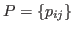
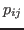
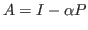
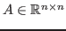
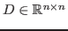
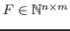
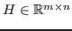
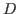
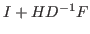
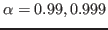

The PageRank problem used by Google for ranking web pages can be mathematically stated as the following linear system

is the transition probability matrix representing the web structure where entry
is the probability of transition from page
In this study we exploit the similarity of pattern structures and the
special distribution of the numerical values on these patterns in the
transition matrix  during the construction of preconditioner.
This similarity often appears due to the similar link distributions of
pages from same hosts. Note that the problem matrix
during the construction of preconditioner.
This similarity often appears due to the similar link distributions of
pages from same hosts. Note that the problem matrix

maintains this similarity structure, except at the diagonal indexes. We propose an economic compression algorithm that computes similarity patterns in PageRank matrices and compresses matrix blocks of
is reformulated as
is more sparse than
and
are low-rank factors. We demonstrate that both the matrix
and the matrix
are unconditionally invertible for PageRank problems. Then we propose a preconditionerNumerical experiments show that our algorithm can solve difficult PageRank problems, i.e. for

, with over one million unknows efficiently, also in comparison to state-of-the-art solvers, and may yield a high compression rate sometimes up to 40%. In this talk we present the theoretical background of the proposed method and we illustrate numerical experiments of realistic PageRank simulations that support our findings. Further improvement is under investigation.